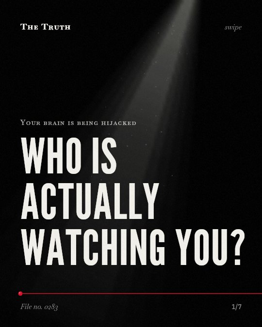

Your brain is being hijacked
Who is actually watching you?

luxury brands can signal failure in poor neighborhoods
The impact of a status symbol depends entirely on the psychology of the observer.,
Supported. At least one solid peer-reviewed study. The evidence is mixed.
What the research found
In poor neighborhoods, luxury brand labels actually showed a negative tendency.
“In contrast to the original study, I did not find positive effects of the luxury brand label in any of the five experiments. Nor did I find evidence for a green-signaling effect. Moreover, in poor neighborhoods a negative tendency of the luxury label actually became evident.”
Experiment, 2017. Berger, PLoS ONE.
Costly signals in international relations can cause people to become more polarized instead of coming together.
“We find patterns consistent with motivated skepticism: the individuals most likely to update their beliefs are those who need reassurance the least, such that costly signals cause polarization rather than convergence.”
Experiment, 2019. Kertzer et al., International Organization.
People who are socially excluded are more likely to want to buy green products because they want to sacrifice for themselves.
“The results show that social exclusion enhances consumers' intention to buy green products and consumers' desire for self-sacrifice mediates that relationship.”
Experiment, 2020. Guo et al., Frontiers in Psychology.
The effect of social exclusion on buying green products only happens when the purchase is done in public.
“The findings show that the effect of social exclusion on green consumption exists only in public purchasing scenarios.”
Experiment, 2020. Guo et al., Frontiers in Psychology.
The effectiveness of a signal depends on the psychology of the person receiving it.
“Because such behaviors are easy to detect, they may be overemphasized in the literature. ... we argue that a focus on the role that the psychology of the intended receiver plays in signal design can expand the scope of signaling theory”
Review, 2014. Soler et al., Evolutionary Anthropology Issues News and Reviews.
signaling is a complex social mechanism
Your actions are interpreted differently based on the environment. A signal intended to show status can be negated or amplified by the receiver's perspective.
you are not in control of your signal
That may be why your attempt to show status fails. You cannot control how others perceive your choices. Your environment dictates the meaning of your actions.
This part is our reading of the evidence, not a finding.
the walk to the subway
you wear a specific logo to feel seen. you walk past people who see something else entirely. the signal is lost in the noise of the street.
The honest summary
The evidence shows that signaling is a complex social mechanism where the receiver's perspective and environment can negate or amplify the intended signal.
The studies show that signaling effects are inconsistent across different socioeconomic contexts and public versus private settings.
who is actually watching you?
Sources
- Joshua D. Kertzer, Brian Christopher Rathbun, Nina Srinivasan Rathbun (2019). The Price of Peace: Motivated Reasoning and Costly Signaling in International Relations. International Organization. Experiment, cited 119 times.
- Yulang Guo, Pan Zhang, Junyun Liao et al. (2020). Social Exclusion and Green Consumption: A Costly Signaling Approach. Frontiers in Psychology. Experiment, cited 35 times.
- Joà l Berger (2017). Are Luxury Brand Labels and “Green” Labels Costly Signals of Social Status? An Extended Replication. PLoS ONE. Experiment, cited 82 times.
- Montserrat Soler, Frank Batiste, Lee Cronk (2014). In the eye (and ears) of the beholder: Receiver psychology and human signal design. Evolutionary Anthropology Issues News and Reviews. Review, cited 27 times.
Also read for this file, not quoted
- Karasek & Bryant (2012). Signaling Theory: Past, Present, and Future.
- McAndrew (2002). New Evolutionary Perspectives on Altruism: Multilevel-Selection and Costly-Signaling Theories.
This file was researched and drafted by software, then checked by rules a model cannot talk its way around: each quote above was matched word for word against the paper, and every number had to appear in it. How files are made.